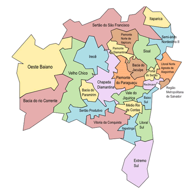
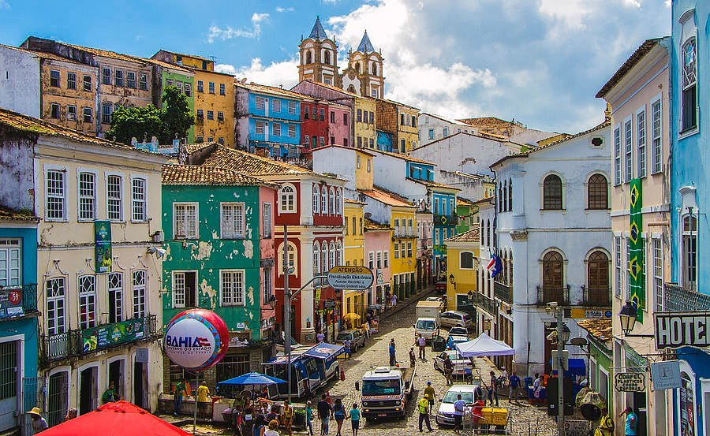
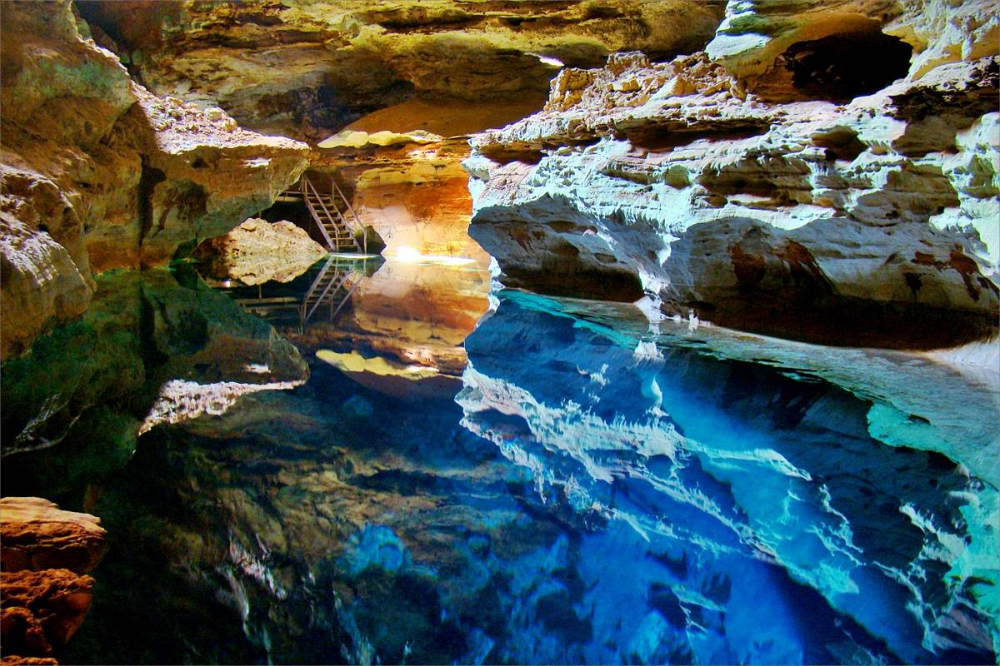

Descrição da Localidade:

A Bahia é um dos estados mais vibrantes e culturalmente ricos do Brasil, localizado na região Nordeste. Conhecida por suas praias paradisíacas, culinária típica, festas populares e o sincretismo religioso, a Bahia mistura história, música, fé e natureza. Salvador, sua capital, foi a primeira capital do Brasil e ainda guarda um patrimônio arquitetônico colonial impressionante, além de ser o berço do axé, do samba-reggae e do candomblé.
Curiosidades:
- A Bahia é o estado com a maior população negra fora da África.
- A culinária baiana tem forte influência africana, com pratos típicos como acarajé, moqueca e vatapá.
- O carnaval de Salvador é considerado o maior carnaval de rua do mundo.
- O Elevador Lacerda, em Salvador, foi o primeiro elevador urbano do mundo.
- O nome "Bahia" vem da Baía de Todos os Santos, descoberta em 1501.
Dados gerais da Bahia
- Região: Nordeste.
- Capital: Salvador
- Governo: democracia representativa, com o governador à frente do Poder Executivo estadual.
- Área territorial: 564.760,42 km² (IBGE, 2022).
- População: 14.141.626 habitantes (IBGE, 2022).
- Densidade demográfica: 25,04 hab./km² (IBGE, 2022).
- Fuso: Horário Padrão de Brasília (GMT -3 horas).
- Clima: tropical e semiárido.
Ideias para aproveitar o turismo!
| Atração | Tipo | Região | Imagem |
|---|---|---|---|
| Pelourinho | Cultural/Histórico | Salvador |  |
| Chapada Diamantina | Natureza / Aventura | Interior da Bahia (Lençóis) |  |
| Elevador Lacerda | Monumento / Urbano | Salvador |  |